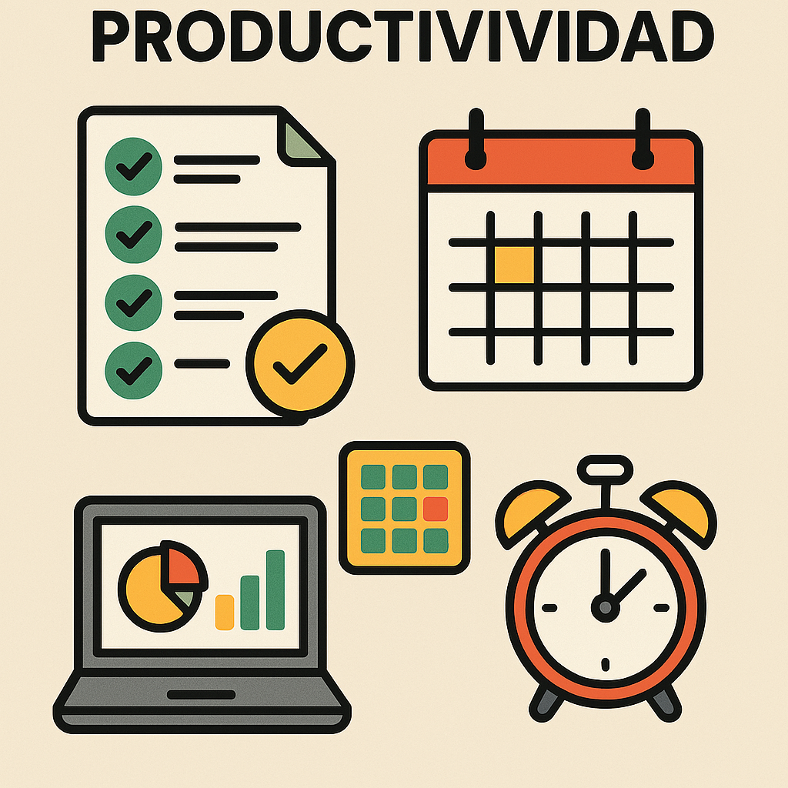

herramientas de productividad
Las herramientas de productividad son aplicaciones o plataformas diseñadas para mejorar la eficiencia y organización en el trabajo o estudio. Estas herramientas pueden incluir gestores de tareas, calendarios digitales, aplicaciones de toma de notas, software de gestión de proyectos, entre otros. Su objetivo es ayudar a los usuarios a administrar su tiempo, priorizar tareas, colaborar con otros y optimizar su flujo de trabajo, facilitando así el logro de objetivos y metas de manera más efectiva.